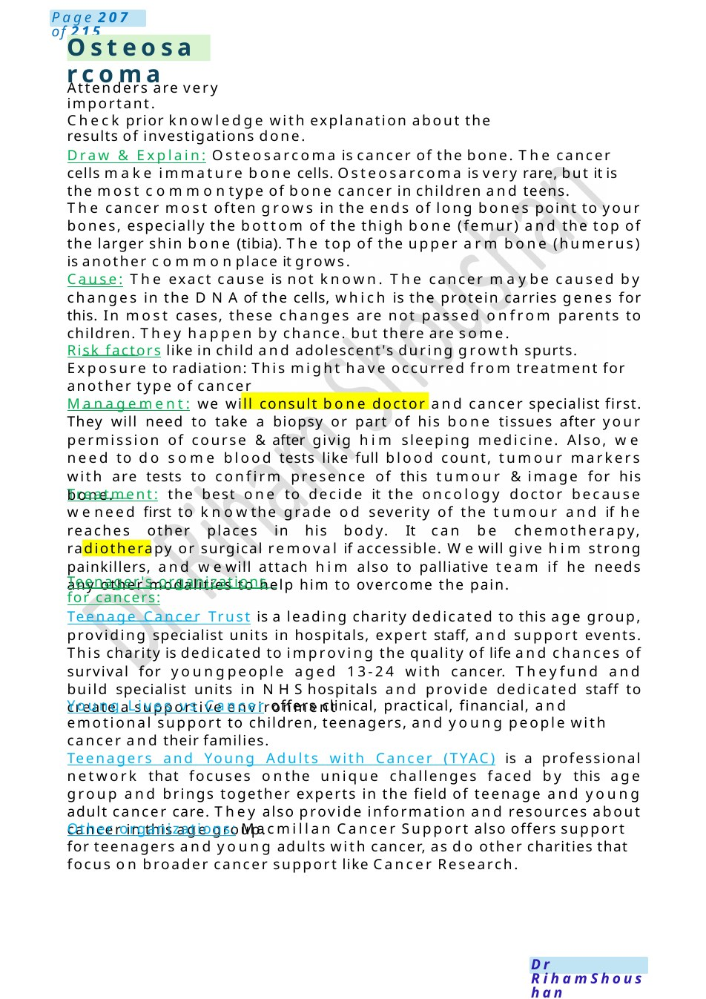
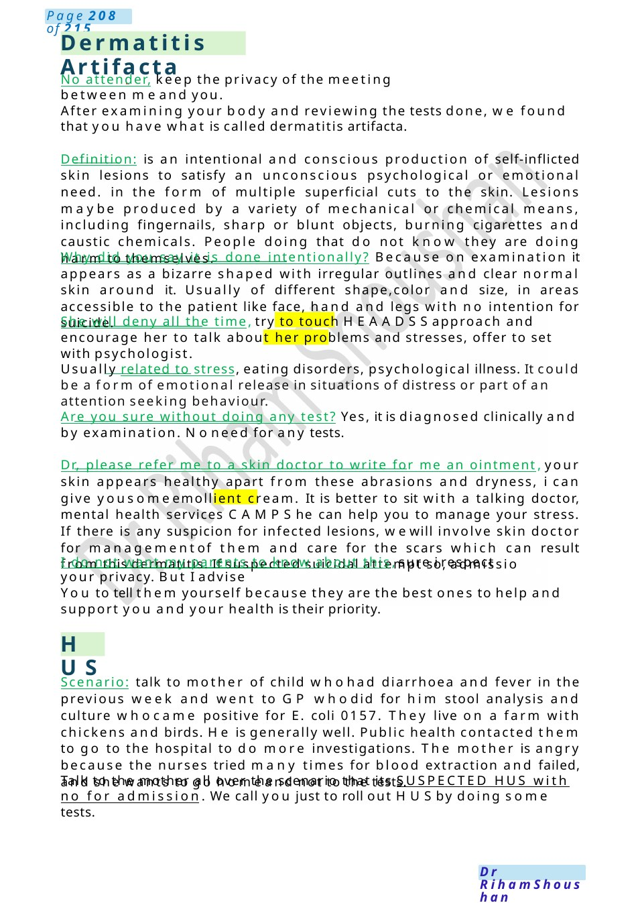

Osteosarcoma
Check prior knowledge with explanation about the results of investigations done. Draw & Explain: Osteosarcoma is cancer of the bone. The cancer cells make immature bone cells. Osteosarcoma is very rare, but it is the most commontype of bone cancer in children and teens.
Scenario Summary
Check prior knowledge with explanation about the results of investigations done. Draw & Explain: Osteosarcoma is cancer of the bone. The cancer cells make immature bone cells. Osteosarcoma is very rare, but it is the most commontype of bone cancer in children and teens.
Full Original Scenario

Osteosarcoma
Attenders are very important.
Check prior knowledge with explanation about the results of investigations done.
Draw & Explain: Osteosarcoma is cancer of the bone. The cancer cells make immature bone cells. Osteosarcoma is very rare, but it is the most commontype of bone cancer in children and teens.
The cancer most often grows in the ends of long bones point to your bones, especially the bottom of the thigh bone (femur) and the top of the larger shin bone (tibia). The top of the upper arm bone (humerus) is another commonplace it grows.
Cause: The exact cause is not known. The cancer maybe caused by changes in the DNAof the cells, which is the protein carries genes for this. In most cases, these changes are not passed onfrom parents to children. They happen by chance. but there are some.
Risk factors like in child and adolescent's during growth spurts. Exposure to radiation: This might have occurred from treatment for another type of cancer
Management: we will consult bone doctor and cancer specialist first. They will need to take a biopsy or part of his bone tissues after your permission of course &after givig him sleeping medicine. Also, we need to do some blood tests like full blood count, tumour markers with are tests to confirm presence of this tumour &image for his bone.
Treatment: the best one to decide it the oncology doctor because weneed first to knowthe grade od severity of the tumour and if he reaches other places in his body. It can be chemotherapy, radiotherapy or surgical removal if accessible. Wewill give him strong painkillers, and wewill attach him also to palliative team if he needs any other modalities to help him to overcome the pain.
Teenager's organizations for cancers:
Teenage Cancer Trust is a leading charity dedicated to this age group, providing specialist units in hospitals, expert staff, and support events. This charity is dedicated to improving the quality of life and chances of survival for youngpeople aged 13-24 with cancer. Theyfund and build specialist units in NHShospitals and provide dedicated staff to create a supportive environment
Young Lives vs Cancer offers clinical, practical, financial, and emotional support to children, teenagers, and young people with cancer and their families.
Teenagers and Young Adults with Cancer (TYAC) is a professional network that focuses onthe unique challenges faced by this age group and brings together experts in the field of teenage and young adult cancer care. They also provide information and resources about cancer in this age group.
Other organizations: Macmillan Cancer Support also offers support for teenagers and young adults with cancer, as do other charities that focus on broader cancer support like Cancer Research.

Dermatitis Artifacta
HUS
No attender, keep the privacy of the meeting between meand you.
After examining your body and reviewing the tests done, we found that you have what is called dermatitis artifacta.
Definition: is an intentional and conscious production of self-inflicted skin lesions to satisfy an unconscious psychological or emotional need. in the form of multiple superficial cuts to the skin. Lesions maybe produced by a variety of mechanical or chemical means, including fingernails, sharp or blunt objects, burning cigarettes and caustic chemicals. People doing that do not know they are doing harm to themselves.
Why did you say it is done intentionally? Because on examination it appears as a bizarre shaped with irregular outlines and clear normal skin around it. Usually of different shape,color and size, in areas accessible to the patient like face, hand and legs with no intention for suicide.
She will deny all the time, try to touch HEAADSSapproach and encourage her to talk about her problems and stresses, offer to set with psychologist.
Usually related to stress, eating disorders, psychological illness. It could be a form of emotional release in situations of distress or part of an attention seeking behaviour.
Are you sure without doing any test? Yes, it is diagnosed clinically and by examination. Noneed for any tests.
Dr, please refer me to a skin doctor to write for me an ointment, your skin appears healthy apart from these abrasions and dryness, i can give yousomeemollient cream. It is better to sit with a talking doctor, mental health services CAMPShe can help you to manage your stress. If there is any suspicion for infected lesions, wewill involve skin doctor for managementof them and care for the scars which can result from this dermatitis. If suspected suicidal attempt so, admissio
I do not want my parents to know about this, sure i respect your privacy. But I advise
You to tell them yourself because they are the best ones to help and support you and your health is their priority.
Scenario: talk to mother of child whohad diarrhoea and fever in the previous week and went to GP whodid for him stool analysis and culture whocame positive for E. coli 0157. They live on a farm with chickens and birds. He is generally well. Public health contacted them to go to the hospital to do more investigations. The mother is angry because the nurses tried many times for blood extraction and failed, and she wants to go homeand not to the tests.
Talk to the mother all over the scenario that its SUSPECTED HUS with no for admission. We call you just to roll out HUSby doing some tests.